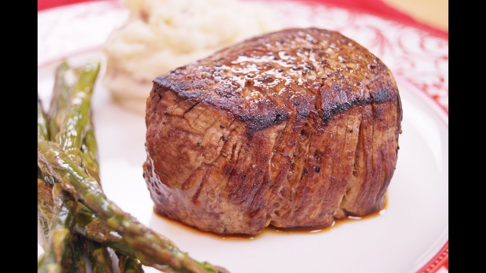

Filet Mignon Recipe

Description
This is a really good recipe for almost any meat that requires almost no ingredients and a few minutes.
It works really well with filet mignon and almost anything else.
There are almost no additives though, so it works best with good meat!
Recommended Sides
- Any potato side
- Any vegetable, but especially asparagus, brocolli, or beans
Ingredients
- Cut of Meat
- Salt
- That's literally it
Steps
- Make sure meat is prepared (thawed if it's frozen, and maybe rinsed and dried)
- Put pan to medium heat. Once hot, cover with salt
- Put steak on salted pan. Let sit for ~3-5 minutes
- Try flipping steak. If it's ready on one side, you should be able to move it, so if it sticks let it sit
- Repeat last step for other side. You're done!